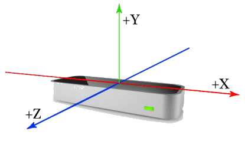

Welcome! Before you get started, let's go over some of Mocha's elements.
Scroll all the way down to begin.
The above image is a screenshot of what you see when you begin Mocha.
At the top and center right of the screenshot, there is a red dot.
The dot shows where your hand is with respect to the
Leap Motion device that is tracking your hand.
Let's talk about the Leap Motion.
Before you use the Leap Motion, make sure the Leap Motion:
Using the axis in the image below, your hand's position is
parsed and given to the Synthesizer to play sounds.

When the Synthesizer is playing:
The next elements we'll look at are in the image below.
The track manager is shown at the top.
As the name suggests, you can manage tracks here
With the track manager, you can:
Careful! You can't get deleted tracks back.
The synthesizer waveform is shown at the bottom.
It shows wave representations when the synthesizer is playing.
Lastly, three buttons are shown in the middle:
Now we can look at the bottom-left of the screen
The metronome is a traditional metronome in beats per minute.
The lead-in time is not traditional lead-in time, though.
It counts the time before recording starts when toggle recording is pressed.
It is in seconds and is to alleviate having to move your hand
to the toggle recording button to start recording.
The bottom is a tuner. It shows the closest note being played.
It also shows how close to that note you are.
Almost done!
Finally, shown below is the right panel of Mocha
The top is where you can load/save projects.
The bottom is where you customize the synthesizer settings.
Try them out to figure out what each one does.
Click begin to start making music!